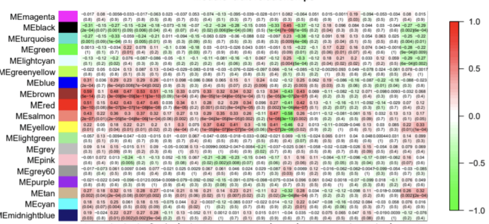

side A · track 05
Gene Expression by Neural-Network Analysis
finding genes that move together
An R pipeline that builds gene co-expression networks from sequencing data to uncover regulatory patterns, highlight functional gene modules and connect them to phenotypes.
NN

what it is
Instead of looking at genes one at a time, this analysis groups genes whose expression rises and falls together into modules — then asks which of those modules track the traits you care about.
It uses WGCNA (weighted gene co-expression network analysis), a standard approach for finding structure in large expression datasets.
how it works
- Clean the samplesHierarchical clustering spots outlier samples so they can be removed before building the network.
- Pick a powerA soft-thresholding power is chosen from the scale-free topology fit.
- Build modulesThe network is built (unsigned TOM, power 9) and cut into colour-coded modules of co-expressed genes.
- Relate to traitsModule eigengenes are correlated with sample traits, with p-values, to highlight the modules linked to the phenotype.